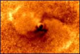

Watch
it! We're not aware of it now, but there may be a killer on the loose. Chances
are that our planet is on the menu of a real Black Hole.
We
won't notice it right away. You see, the trouble with Black Holes is that they
are, well, kind of black. You don't really see them -- until they suddenly
knock on our door.
And
`knocking' is an understatement. Suddenly, we'll notice a weird disturbance of
the outer parts of our solar system. The cosmic debris that makes up the Oort
Cloud -- the outer edge of our solar system -- starts acting strange. The
orbits of the outer planets Pluto and Neptune might become disturbed. Out of
nowhere, planets will change course.
Cosmologists
will ring the alarm bell -- if they don't decide it's better no-one knows
what's coming. But after a while, even amateur astronomers will notice there's
something odd going on. For example, they might notice that one day, planets
like Jupiter or Saturn are no longer there.
Oh
boy, will that
bring about some panic on Earth! A Black Hole, a real Black Hole is
speeding through our solar system! Scientists on TV will bring the bad news:
one year, two perhaps, but then it will all be over. Perhaps some politicians
will make a feeble attempt to nuke the Black Hole. But that's so stupid. You
can't blow up something that is not really an object -- but a hole.
After
some time -- will it be years? months? -- the Black Hole finally closes in on
our planet. Suddenly, our entire planet is lifted from its orbit around the
Sun. In a tiny fraction of a second, it accelerates to the speed of light, and
zooms off, destination Black Hole.
Once
there, something highly unusual happens. The Earth suddenly stretches out,
forming a sort of thread, with zero thickness (no, really!). In that shape, it
will be sucked into total nothingness, as the Black Hole devours our planet
with everything and everyone on it. There will be no explosions or woes of
agony -- all that is sucked up too.
And
that's not even the worst possibility. More likely, the Black Hole will
pass our planet at some distance. It won't swallow the Earth. But it will
definitely take a swing at the planet's orbit around the Sun. Like a giant
catapult, it will kick away the Earth, off into deep space. Earth will become
a lost planet, covered in coldness and darkness forever.
No need telling that on a planet like that, life is absolutely impossible. We may hold out for a while, clinging to all the technology we can think of, but after that we'll definitely die a horrible deep space death. No Sun is no heat -- but also, no plants, no plankton, no tidal forces and as a result, no climate, no atmosphere and no oxygen. Thank you very much, mr. Black Hole!
So,
what is a Black Hole, really?
A
Black Hole is, in essence, the corpse of what once was a star. When a star
with at least five times the mass of our Sun runs out of fuel, it implodes.
It's own gravity presses it together -- and presses it together some more,
until there's nothing really left. What you have then is a Black Hole: a tiny
speck of matter (well, matter isn't the right word, really), but with immense
mass.
Because
of that, Black Holes have an unimaginable gravity. So strong is their
gravity, even light can't escape from it -- that's why the darn thing is
called `Black Hole' in the first place (the term `Black Hole' was coined in
1969 by John Wheeler, who got tired of using the tongue twisting term
`gravitationally collapsed stars' all the time).
|  |
|
|
And the bad part is, no-one knows how big the threat is. There might be a Black Hole heading our way as we speak. We do know that every once and a while, another star pays our solar system a visit. So it's only common sense to assume we should sometimes bump into a dead star, too. A star, you would see that one coming. A Black Hole -- you wouldn't.
Now,
if you're a devoted science fiction fan, perhaps you don't worry too much.
There are all kind of great fantasy stories about what lies beneath the Black
Hole (remember the 1979 Walt Disney-movie `The Black Hole'?)
And
indeed, no-one really knows if a Black Hole isn't in fact some kind of
gateway. It might lead to another part of the Universe, or even to an entirely
different Universe. So falling into a Black Hole may be a fun thing to do
after all.
Well,
those sci-fi fans overlook one minor detail. Before `passing' the Black
Hole, your body turns into a tail of spaghetti. Also, the atoms you are made
of are ripped to pieces. So if it's Black Hole day, bear this in mind: once
you get to the other side -- if there is one -- you won't be sending any
postcards home.